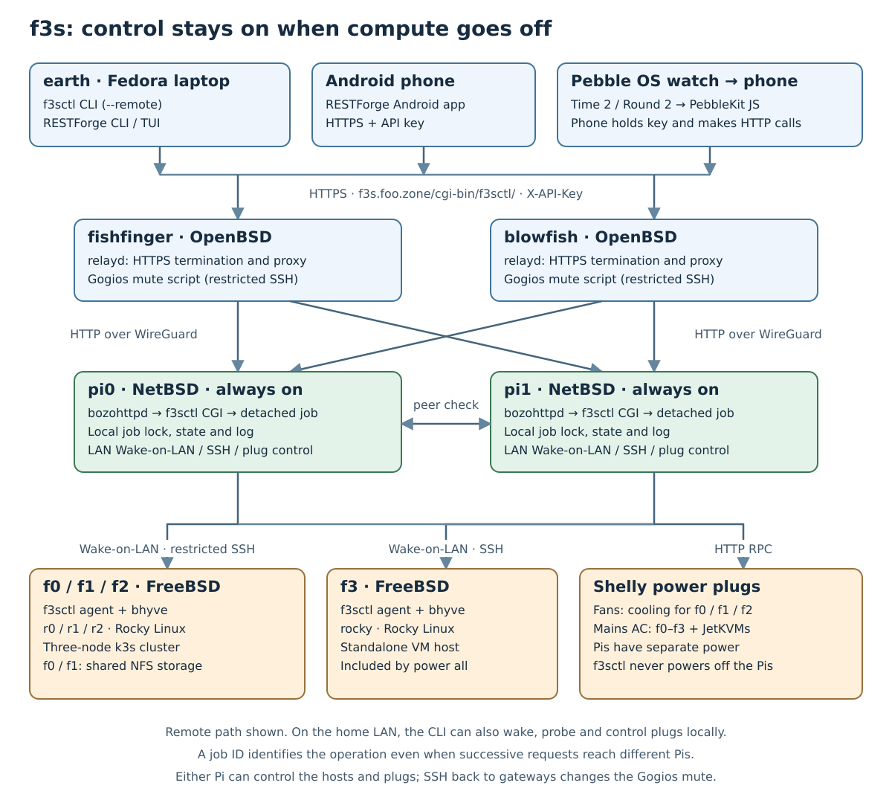
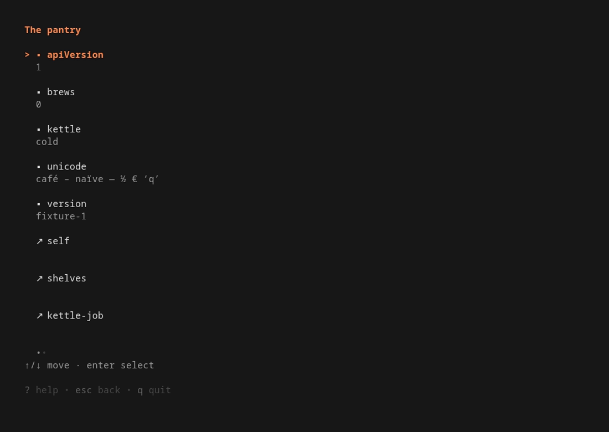
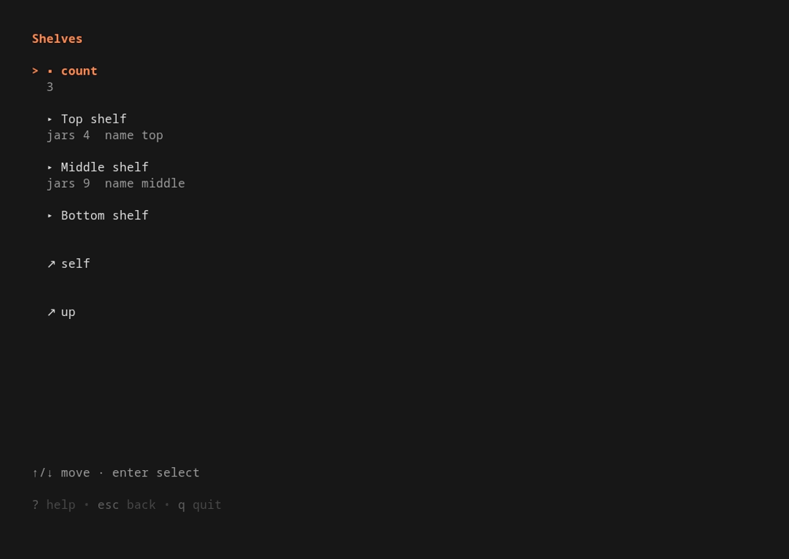
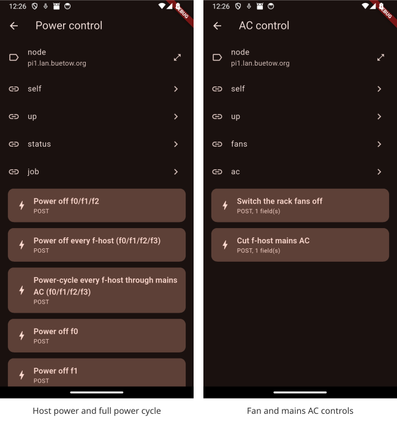
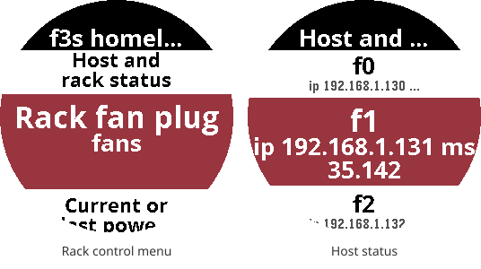
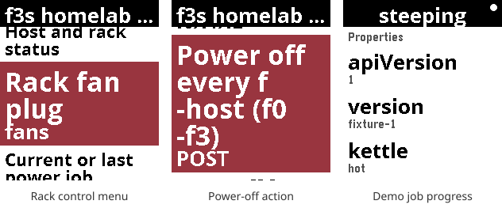

f3s: Kubernetes with FreeBSD - Part 11: Remote control with f3sctl
Turning the cluster off is easy. Getting it back on while I'm away from home needs a little more thought. This part of my f3s series is about f3sctl, the tool I wrote to control the hosts, their power plugs and monitoring from my laptop, phone, and even a Pebble watch.
2024-11-17 f3s: Kubernetes with FreeBSD - Part 1: Setting the stage
2024-12-03 f3s: Kubernetes with FreeBSD - Part 2: Hardware and base installation
2025-02-01 f3s: Kubernetes with FreeBSD - Part 3: Protecting from power cuts
2025-04-05 f3s: Kubernetes with FreeBSD - Part 4: Rocky Linux Bhyve VMs
2025-05-11 f3s: Kubernetes with FreeBSD - Part 5: WireGuard mesh network
2025-07-14 f3s: Kubernetes with FreeBSD - Part 6: Storage
2025-10-02 f3s: Kubernetes with FreeBSD - Part 7: k3s and first pod deployments
2025-12-07 f3s: Kubernetes with FreeBSD - Part 8: Observability
2025-12-14 f3s: Kubernetes with FreeBSD - Part 8b: Distributed Tracing with Tempo
2026-04-02 f3s: Kubernetes with FreeBSD - Part 9: GitOps with ArgoCD
2026-09-01 f3s: Kubernetes with FreeBSD - Part 10: A New Home

Table of Contents
- f3s: Kubernetes with FreeBSD - Part 11: Remote control with f3sctl
- ⇢ Something has to stay on
- ⇢ From the internet to the rack
- ⇢ Commands from earth
- ⇢ What it can control now
- ⇢ ⇢ Hosts and guests
- ⇢ ⇢ Fans
- ⇢ ⇢ Mains power
- ⇢ ⇢ Monitoring mute
- ⇢ ⇢ Monitoring reports
- ⇢ ⇢ Jobs and API discovery
- ⇢ Switching off in the right order
- ⇢ Two Pis, one job
- ⇢ RESTForge: let the API supply the menu
- ⇢ ⇢ A second Shelly plug, no app updates
- ⇢ ⇢ The same API on three screens
- ⇢ ⇢ In the terminal
- ⇢ ⇢ On Android
- ⇢ ⇢ From a Pebble OS watch
- ⇢ A remote control that survives the shutdown
Something has to stay on
For anyone joining here: f3s stands for FreeBSD and k3s. My three FreeBSD mini-PCs, f0, f1 and f2, each run a Rocky Linux virtual machine under bhyve. Those guests, r0 through r2, form the Kubernetes cluster. A fourth FreeBSD host, f3, runs a separate Rocky Linux VM and isn't part of k3s.
The remote control can't live only inside that cluster. Otherwise, after switching it off, I'd have switched off the thing needed to wake it again. So the control service runs on pi0 and pi1, my two always-on Raspberry Pis running NetBSD. They already serve static sites with bozohttpd, NetBSD's small web server. It can run CGI programs too, which is all f3sctl needs.
f3sctl source code
On the other side is earth, my main Fedora laptop. I can use the f3sctl command-line interface there, or browse the same API with RESTForge. RESTForge also has Android and Pebble OS apps. More on those below.
RESTForge source code
From the internet to the rack
The public entry point is https://f3s.buetow.org/cgi-bin/f3sctl/. My two OpenBSD gateways, fishfinger and blowfish, run relayd. Either gateway can forward requests over WireGuard to the NetBSD Pis, with relayd balancing requests between pi0 and pi1.
relayd manual
WireGuard


HTTPS terminates at the gateways; the HTTP connection to the Pis travels inside WireGuard. The Pi receiving the request runs f3sctl as a CGI program under bozohttpd. For a longer operation, it starts a detached job and returns a job ID. The client can then follow progress without holding the original request open for the whole shutdown.
From the Pis, Wake-on-LAN packets wake the FreeBSD hosts, restricted SSH commands shut them down, and HTTP requests control the Shelly plugs. One plug powers the rack fans for f0 through f2; another controls mains power for f0 through f3 and their JetKVMs. The Pis stay on their own power. f3sctl never switches them off.
There are three modes in the same Go program: the CLI on earth, CGI on the Pis, and a restricted agent on the FreeBSD hosts. The OpenBSD gateways don't need the f3sctl binary. Apart from forwarding requests, they have a small forced-command script for setting and clearing the Gogios monitoring mute marker.
Commands from earth
The old wol-f3s shell script grew into f3sctl. The basic commands are still short. These examples assume the API URL and key are configured; they show commands to run, not a captured shutdown session:
f3sctl --remote power status f3sctl --remote power on f3sctl --remote power off
--remote matters when I'm away from home. A Wake-on-LAN magic packet is a local broadcast; it doesn't magically cross the internet just because I have a WireGuard tunnel. With remote mode, a Pi sends it on the home LAN instead.
Shutdowns already go through the API by default, even when invoked from a Pi. Only the Pis hold the restricted SSH identity accepted for these operations. Waking, probing and plug control can run locally, which also leaves a way to wake the hosts from the LAN if the API is unavailable. --local explicitly selects that path, but it still needs the appropriate connectivity and credentials.
On earth, the per-user configuration is ~/.config/f3sctl.json. For example, with the key stored separately in a private file:
{ "api_url": "https://f3s.buetow.org/cgi-bin/f3sctl/", "api_key_file": "/home/paul/.config/f3sctl/apikey" }
The API key travels in the X-API-Key header. Putting it in the URL would also put it in access logs, so the API doesn't accept that. Each client can have its own key; both Pis must accept the same set because either one may receive a request.
For troubleshooting, f3sctl -v power status traces the HTTP calls, their duration and which Pi answered. The verbose flag also selects remote mode. This is useful when two consecutive requests land on different Pis.
What it can control now
The current command set has six groups. The storage work described later is part of the shutdown procedure, rather than a separate storage administration interface.
Hosts and guests
- power status probes the FreeBSD hosts and the k3s nodes.
- power on and power off operate on f0, f1 and f2, with the rack fan and monitoring handling included.
- power all on and power all off include the standalone f3 host too.
- power f0 on and power f0 off target one host. The same works for f1, f2 and f3.
- power all cycle shuts down all four hosts, cuts mains AC, restores it and wakes them again.
A single-host shutdown leaves the fans and Gogios mute alone. It stops that host's guests as part of shutting the host down; there isn't a separate command here to start or stop an arbitrary VM or Kubernetes deployment.
Fans
fans status, fans on and fans off control the fan plug. Switching the fans off is guarded while any of f0, f1 or f2 may still be running, or while a power job is in flight. f3 sits separately and isn't cooled by these fans, so it doesn't keep them on.
Mains power
ac status, ac on and ac off control the f-host mains plug. This is separate from asking an operating system to shut down. Cutting AC is guarded while any f-host may be up, or while a power job is running.
Both plug-off commands have an explicit --force override. Switching a plug on remains available without the job guard, so a stale job record doesn't prevent restoring power or cooling.
Monitoring mute
monitoring status, monitoring mute and monitoring unmute report or change the Gogios alerting mute. A planned shutdown shouldn't page me about the hosts I just switched off! The explicit unmute command is also handy if an interrupted local wake left monitoring muted.
Gogios
Monitoring reports
gogios (or gogios status) shows the report overview. I can drill into critical, warning, unknown, stale, suppressed and ok, then ask for a check's full detail:
f3sctl --remote gogios critical f3sctl --remote gogios detail 'name of a check from the report' f3sctl --remote gogios cache clear
The last command clears the report cache so the next read fetches it again. These reports and the mute controls are also browsable through the API.
Jobs and API discovery
The API exposes the current or last power job, including its ID, progress and outcome. It also exposes the host and plug status, the monitoring reports, and an OpenAPI description. RESTForge follows those links to display them. version prints the CLI version, while the API root reports its version and serving node too.
Switching off in the right order
The interesting part of power off is what happens before the hosts disappear. Kubernetes uses storage exported by the FreeBSD machines, so shutting them down in an arbitrary order is asking for stuck NFS clients.
The shutdown procedure first checks local NFS mounts and unmounts them, refusing to continue if they are stuck. It then unloads the removable zusb backup pool wherever it is imported, allowing its snapshot, clean export and disk spin-down to finish before losing power. Gogios gets muted before the hosts go away.
Next comes the storage failover pair. CARP is the mechanism that lets f0 and f1 share a virtual IP address for storage. During shutdown, f3sctl stops devd and cron on that pair so a failover or scheduled failback doesn't start storage services on a host that is itself going down. NFS stays available while the guests still need it.
The other selected hosts then shut down in parallel, with the configured storage master last. In my inventory that is f0. If quiescing the failover daemons fails, f3sctl falls back to a sequential shutdown. Guest shutdown has a bounded wait so it doesn't overrun the FreeBSD host's shutdown watchdog.
Finally, f3sctl checks that the hosts stopped answering, and only switches off the rack fans once f0 through f2 are down. A timing summary in the job log shows where the time went. Network silence is the check available here; it isn't a physical power sensor.
Waking does the reverse where needed: fans on, magic packets sent, then a wait for r0, r1 and r2 to answer before unmuting Gogios. While waiting, magic packets are sent again every two minutes. If a node never comes back before the timeout, monitoring is unmuted anyway and the wake reports a failure. Otherwise the broken host would remain conveniently hidden behind the mute.
The full cold cycle adds two waits: 15 seconds with AC off, then 30 seconds after restoring AC before sending wake packets. It refuses to cut mains if shutdown hasn't completed. It also attempts to restore AC if the job is interrupted during the power-off wait. None of that helps if the Pi itself loses power, which is another reason to keep the control machines on a separate supply.
Two Pis, one job
There is a small complication with load balancing. A job can start on pi0, while the next status request lands on pi1. Host status describes the same physical machines from either Pi, but job state belongs to the Pi that ran the job.
So clients must match the job ID. An old result from the other Pi doesn't mean the new job failed, and an empty response doesn't mean it finished. Every response also has an X-F3sctl-Node header to make the serving node visible.
Each Pi uses a local lock and checks its peer before starting a power job. This reduces conflicting operations, but it isn't a distributed lock. I don't have shared storage independent of the cluster that I'm about to switch off. That limitation is worth keeping explicit.
The SSH side is deliberately narrow too. The FreeBSD agent accepts five bare verbs: probe, zusb-status, zusb-unload, carp-quiesce and poweroff. A dedicated account, source-address restrictions, an sshd ForceCommand and exact-command doas rules limit what the Pi's key can do. The CGI process itself doesn't need to run as root.
RESTForge: let the API supply the menu
I don't always want to type a command. RESTForge is a browser for Siren, a JSON format for hypermedia APIs. “Hypermedia” sounds rather grand, but the idea is familiar from browsing a website: a response contains both information and links or actions I can follow next.
Siren hypermedia format
In Siren, properties describe the current state, sub-entities describe related things, and links lead to other resources. An action describes something I can do: its name and title, the URL to submit to, the HTTP method and any input fields. So the server supplies enough information for RESTForge to draw the menu and submit a request without knowing what a particular button does to my homelab.
For f3sctl, the root leads to power control, AC control, Gogios and read-only resources. The API decides which operations to offer in the current state. RESTForge doesn't need a hard-coded list of f-hosts, shutdown rules or API paths. It knows how to display a Siren document and follow what that document offers.
All three RESTForge versions ask for confirmation before sending an action with an unsafe HTTP method, then fetch the document again afterwards. Here, “unsafe” is HTTP terminology for a method that may change state. Long-running operations are watched until the server reports their result. A stale action returning 409 Conflict causes a refresh, rather than an automatic retry of a power command.
A second Shelly plug, no app updates
I recently added a second Shelly plug to cut and restore mains power to all the f-hosts. The first plug controls the fans; this one lets me do a full power cycle. That meant adding the plug control and cold-cycle procedure to f3sctl, then exposing the new status, links and actions in its REST responses.
I didn't have to update any of the RESTForge apps. No new terminal-client build, Android APK or Pebble watchapp. When the existing clients fetched the updated Siren documents, they could display the AC controls and the full power-cycle action straight away. The labels and request details came from the server, just like the older controls.
The whole shutdown, AC-off wait, AC restore and wake sequence still runs in f3sctl. RESTForge submits the advertised action and watches the resulting job. It doesn't need to know that I've added another plug, which hosts that plug powers, or how long their power supplies need to drain.
That's the useful part of Siren for me: I can add homelab functionality on the server without maintaining the same feature in three different user interfaces. As long as the addition uses the Siren fields and job behaviour the clients already support, it is new data to browse. A new kind of interaction outside that contract would still need client work.
The same API on three screens
The terminal screenshots below come from RESTForge's repository and use its “pantry” demo API, with shelves and a kettle instead of servers and power plugs. The Android screenshots were captured in an emulator connected to my real f3sctl backend. The watch section also includes actual f3sctl screens, plus a labelled demo of job progress.
In the terminal
Running restforge opens the terminal user interface, or TUI. It has a backend picker, browsable documents, confirmation prompts, settings and saved shortcuts. Arrow keys or vi-style keys move through the rows, and / filters the list.




These two frames come from the repository's terminal recording. On earth, I can configure an f3s backend with the public API base URL, X-API-Key as the auth header, and my client key. Then I browse power control and monitoring in the same way.
There are one-shot commands as well. After configuring that backend, these are read-only examples:
restforge --backend f3s get restforge --backend f3s get --rel power restforge --backend f3s get --output json
restforge act invokes a server-advertised action, with --yes providing confirmation for a state-changing request. For scripting a known homelab operation I can keep using f3sctl; for exploring what an API currently offers, RESTForge gives me a menu.
RESTForge terminal client and usage
On Android
The Android version is written in Flutter. I add the backend URL and key in its settings, then tap through properties, links and actions. The app uses secure storage for the secret. The terminal version instead keeps it in its private TOML configuration file.


Here the app is showing the real host power and AC menus, including the full power-cycle action added for the second Shelly plug. These captures only browse the available controls; no power action was submitted to take them. Selecting an action opens its confirmation prompt. Once confirmed, the app follows the job and refreshes the document to find out what changed.
RESTForge Android app
My F-Droid repository, including RESTForge
From a Pebble OS watch
And then there is the smallest client: the RESTForge Pebble OS watchapp. It targets the Pebble Time 2 and Pebble Round 2. The same API menu fits on the watch, with physical buttons for moving between rows and selecting an entry. A long press on Select refreshes the document.




The watch doesn't make the HTTP requests itself. PebbleKit JavaScript in the phone companion handles requests, navigation, API parsing and job polling. It sends rendered text to the watch; the watch sends back which row I pressed. The API key and URLs stay on the phone.
Backend configuration lives in the Pebble phone app's settings for RESTForge. Pointing it at f3sctl therefore gives the watch the same power and monitoring menus without teaching the watch anything about FreeBSD or Kubernetes. The phone needs to be connected for this to work; the standalone RESTForge Android app isn't the bridge used by the watch.
RESTForge Pebble OS app
RESTForge in the Pebble Appstore
A remote control that survives the shutdown
The part I care about most is the two little NetBSD Pis staying available when the larger machines are off. The CLI, phone app and watch are different ways of reaching them. The ordering of the actual work stays in f3sctl, close to the hosts and plugs it controls.
A watch button is a funny place for a FreeBSD shutdown to begin. Underneath, it still has to wait for the guests, storage and hosts to finish in the right order. That is where most of the work went.
Read the previous post of this series:
f3s: Kubernetes with FreeBSD - Part 10: A New Home
Other *BSD-related posts:
2026-09-01 f3s: Kubernetes with FreeBSD - Part 10: A New Home
2026-04-02 f3s: Kubernetes with FreeBSD - Part 9: GitOps with ArgoCD
2025-12-14 f3s: Kubernetes with FreeBSD - Part 8b: Distributed Tracing with Tempo
2025-12-07 f3s: Kubernetes with FreeBSD - Part 8: Observability
2025-10-02 f3s: Kubernetes with FreeBSD - Part 7: k3s and first pod deployments
2025-07-14 f3s: Kubernetes with FreeBSD - Part 6: Storage
2025-05-11 f3s: Kubernetes with FreeBSD - Part 5: WireGuard mesh network
2025-04-05 f3s: Kubernetes with FreeBSD - Part 4: Rocky Linux Bhyve VMs
2025-02-01 f3s: Kubernetes with FreeBSD - Part 3: Protecting from power cuts
2024-12-03 f3s: Kubernetes with FreeBSD - Part 2: Hardware and base installation
2024-11-17 f3s: Kubernetes with FreeBSD - Part 1: Setting the stage
2024-04-01 KISS high-availability with OpenBSD
2024-01-13 One reason why I love OpenBSD
2022-10-30 Installing DTail on OpenBSD
2022-07-30 Let's Encrypt with OpenBSD and Rex
2016-04-09 Jails and ZFS with Puppet on FreeBSD
E-Mail your comments to paul@nospam.buetow.org :-)
Back to the main site